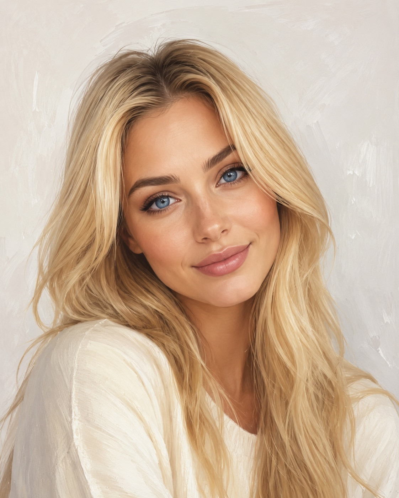
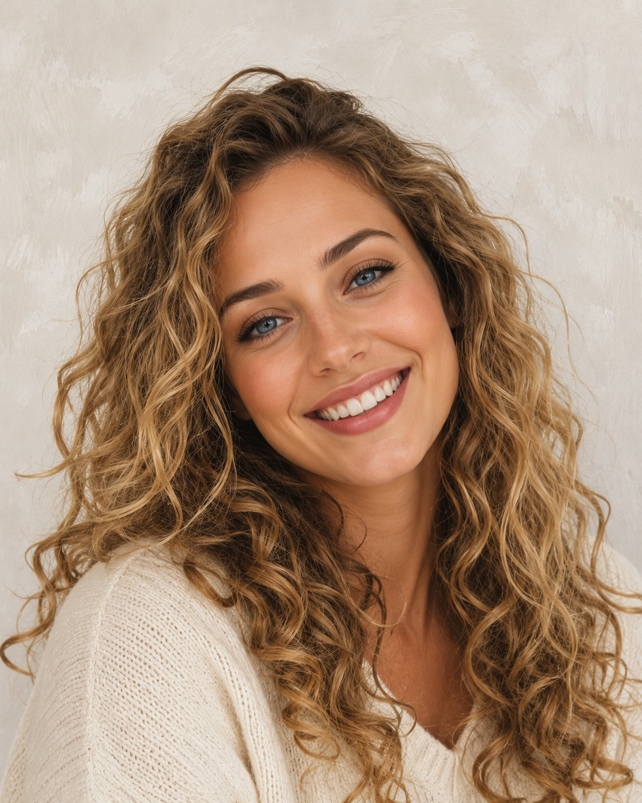

El este înalt și slab.
Er ist groß und schlank.
Ea este scundă și veselă.
Sie ist klein und fröhlich.
El are părul scurt.
Er hat kurze Haare.
Ea are ochii albaștri.
Sie hat blaue Augen.
Privește fotografiile și alege propoziția potrivită.


Care este contrariul lui „înalt”?
Cum spui „schlank” în română?
Mein Vater ist groß und schlank.
Wie sieht deine Schwester aus?
Mama mea este...
Bunicul meu este...
Cum arată mama ta?
Model: Mama mea este înaltă. Ea are părul blond.
Cum este tatăl tău?
Model: Tatăl meu este scund și vesel. El poartă ochelari.
Cum arată fratele, sora, bunicul sau bunica ta?
Spune 2–3 propoziții folosind „este”, „are” și „poartă”.